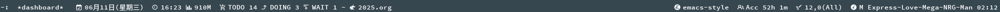

Table of Contents
1. 使用eval与format来手动搓出modeline信息-而不是使用preset预设
1.1. 展示效果

1.2. 手动搓出法
通过 (:eval) 与 (format) 来手动搓出modeline信息，而不是使用preset预设
这个 “手动搓出法” 早在 Emacs 22 (2007年) 就已经诞生出来了。
我这个在2024年才开始用Emacs，才用了一年半的xdx，还真的不知道这种用法
难怪之前还在逛emacs-china论坛的时候，看到 有佬是这么来设置modeline 的呢…
难怪…
1.3. 使用预设 → 迁移到 → 手动搓出法
如果使用预设preset的话，那么应该是这样的
(setq-default mode-line-format
'("%e"
mode-line-mule-info
mode-line-client
mode-line-modified
mode-line-remote
mode-line-frame-identification
mode-line-buffer-identification
" "
mode-line-position
(vc-mode vc-mode)
" "
mode-line-modes))
如果使用手动搓出法的话，上面这些预设preset，对应的是下面的手动搓出法
; =========================================
; mode-line-mule-info
; =========================================
; U，代表字符编码
(setq my/mule-info
'(:eval (format "U:%s%s"
(if (coding-system-p buffer-file-coding-system)
(symbol-name (coding-system-base buffer-file-coding-system))
"??")
(if buffer-file-coding-system '"" "-"))))
; =========================================
; mode-line-cilent
; =========================================
; @@，代表用emacscilent去连ssh远程时的状态信息
(setq my/client-info
'(:eval (if (and (boundp 'server-buffer-clients) server-buffer-clients)
"@@"
"")))
; =========================================
; mode-line-modified
; =========================================
; **，已修改当前buffer
; --，已修改当前buffer
; %%，不让修改当前buffer，只读
(setq my/modified-info
'(:eval (cond (buffer-read-only "%%") ; 只读
((buffer-modified-p) "**") ; 有修改
(t "--")))) ; 干净状态
; =========================================
; mode-line-remote
; =========================================
; @host，代表远程主机名
(setq my/remote-info
'(:eval (when (file-remote-p default-directory)
(format "@%s" (file-remote-p default-directory 'host)))))
; =========================================
; mode-line-identification
; =========================================
; 显示当前的frame名(C-x 5 1开多一个frame时能看到不同的)
(setq my/frame-id
'(:eval (if (boundp 'mode-line-frame-identification)
(format "%s" (frame-parameter nil 'name))
"")))
; =========================================
; mode-line-buffer-identification
; =========================================
; 具体的buffer名称，默认的占位符为 "%12b"
(setq my/buffer-id
'(:eval (format "[%s]" (buffer-name))))
; =========================================
; mode-line-position
; =========================================
; 显示行号、字符数量(比如 ALL L3 或 TOP L114514)
(setq my/pos
'(:eval (format "L%d:%d" (line-number-at-pos) (current-column))))
于是我们就可以在此基础上增删改查了，改成自己想要的样子
最后就可以缝在mode-line-format上了
(setq-default mode-line-format
(list
;; 左对齐(默认不添加任何符号Symbol，默认都是左对齐)
'(:eval my/mule-info)
'(:eval my/modified-info)
;; 右对齐(如果添加符号mode-line-format-right-align，那么以下都变成右对齐)，参考 https://emacs-china.org/t/emacs30-modeline/28415
'mode-line-format-right-align
'(:eval my/buffer-id)))